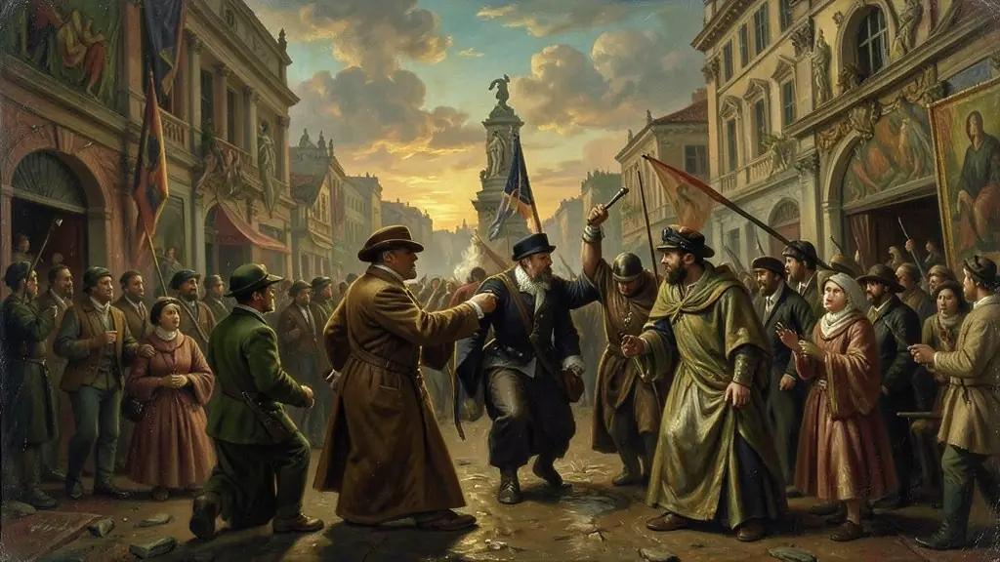
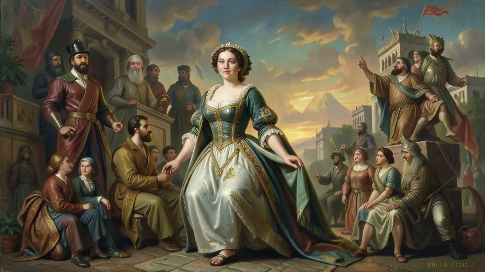
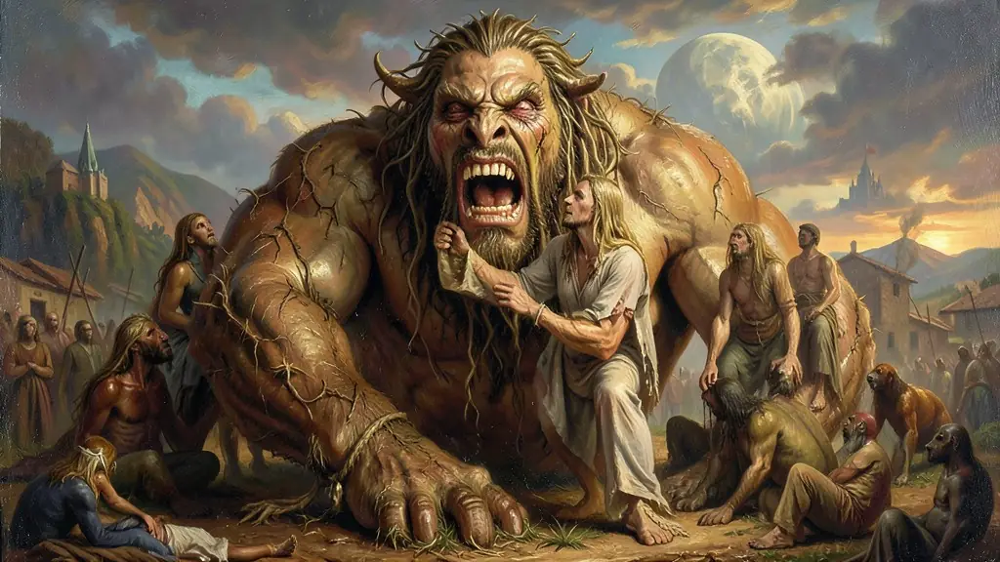

Capítulo 01
1. O Contexto de 1922: O Ano das Crises
1922 foi o ano em que o Brasil começou a mudar de pele. Enquanto no rádio se ouvia o discurso do Centenário da Independência, nas ruas de SP os modernistas gritavam contra os 'passadistas'. A República Velha estava em crise: o operariado se organizava, os jovens oficiais do exército (tenentes) se rebelavam e a arte não podia mais ser apenas um enfeite para saraus de luxo.

Capítulo 02
2. Anita Malfatti e o Escândalo de 1917
A semente da Semana foi a exposição de Anita Malfatti em 1917. Suas pinturas expressionistas, com cores 'não convencionais' e rostos distorcidos, causaram a fúria de Monteiro Lobato, que escreveu o artigo 'Paranoia ou Mistificação?'. O ataque de Lobato uniu os jovens intelectuais em defesa de Anita, criando o grupo que organizaria a Semana cinco anos depois.

Capítulo 03
3. Antropofagia: Só me interessa o que não é meu
Oswaldo de Andrade lançou o lema: 'Tupi or Not Tupi, that is the question'. A ideia era de que o brasileiro é, por natureza, um canibal cultural. Deveríamos comer o cinema de Hollywood, a poesia de Paris e a técnica de Berlim para criar um Brasil 'Pau-Brasil' — forte, autêntico e exportável. Era o fim do complexo de vira-lata estético.

Capítulo 04
4. Mário de Andrade e Macunaíma
Mário de Andrade foi o 'Papa do Modernismo'. Ele viajou pelo interior do Brasil colhendo cantigas, sotaques e lendas. Sua obra-prima, 'Macunaíma: o herói sem nenhum caráter', resume o brasileiro: uma mistura étnica e cultural confusa, mágica e cheia de preguiça/vontade criativa. Mário provou que o Brasil real estava nas feiras, nas rezas e no povo misturado.
Capítulo 05
5. O Legado: O Modernismo como Identidade
Após a Semana de 22, a arte brasileira nunca mais foi a mesma. Ela abriu caminho para a arquitetura de Brasília, para o Cinema Novo de Glauber Rocha e para o Tropicalismo de Caetano Veloso. A Semana nos ensinou que ser moderno é, antes de tudo, conhecer e aceitar nossas raízes indígenas, africanas e portuguesas em toda a sua gloriosa contradição.
A icônica Semana de Arte Moderna de 1922 sediada efusivamente no Teatro Municipal paulistano concretizava a radical transgressão da intelectualidade nacional – Mario e Oswald de Andrade, Tarsila e Anita Malfatti. Romperam publicamente e de modo cáustico com o conservadorismo e a letargia passadista emulada pela oligarquia de bacharéis de cultura exclusivamente parnasiana passivamente voltada à cópia de moldes europeus clássicos.
O advento iconoclasta desse vanguardeirismo impôs à pauta de reflexão da cultura e do gosto artístico uma indagação primordial identitária sobre o país, o Manifesto Antropofágico clamaria brilhantemente a absorção técnica externa mistificada simbióticamente e deglutida da riqueza autóctone regional. O caipirismo literário, o índio, os contornos nativistas coloririam as novas perspectivas e quadros genuinamente tupiniquins contemporâneos.
Nas exigências cognitivas avaliativas os ideais modernistas devem sempre vincular-se simultaneamente ao processo paralelo do avanço de industrialização da cidade de São Paulo, o esgotamento intelectual reflexo da crise de 1929 nas exportações do 'café com leite' à época e as agitações anacro-sindicalistas que transformaram definitivamente a cultura identitária republicana.
Fonte: CANDIDO, Antonio. Literatura e Sociedade. Rio de Janeiro: Ouro sobre Azul, 2006.
Atividades interativas
Questões para fixar
O Manifesto Antropofágico, escrito por Oswald de Andrade, propunha uma nova relação com a cultura europeia. Essa proposta se baseava em:
A Semana de Arte Moderna de 1922 ocorreu em um momento de profundas transformações no Brasil. Qual outro evento histórico marcante ocorreu no mesmo ano?